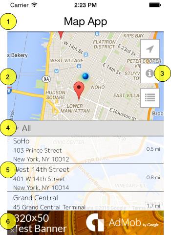
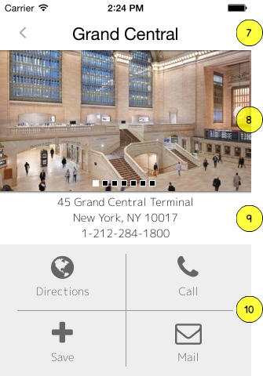

Thank you for purchasing MapApp Template!
We hope you enjoy working with this code and release a great app to the Apple AppStore and/or the Google Play Store.
If you have any questions or concerns that are beyond the scope of this document then please send them to our Envato Marketplace Contact Form. You can also ask questions in the MapApp Comment Section.
The goal of MapApp template is to give you a foundation for your locations application. This template includes a Google map view with annotations, fullscreen mode, info web view, location categories, location image gallery, action buttons for each location and distance calculator to sort locations by distance from device.
MapApp template is designed to work on the Appcelerator Titanium Mobile platform (iOS and Android devices). If you are not familiar with the Titanium platform then refer to the Getting Started with Titanium guide.
Screenshots
 
Titanium Studio
Launch Titanium Studio and navigate to File > Import. Select Titanium > Existing Mobile Project and click next. Browse to the location of the MapApp Template folder in the Project directory field. Change the project name to the name of your app project and click Finish.
Titanium CLI
Create your new Titanium project using CLI command. Copy your guid from the generated tiapp.xml file for this project. Then replace the contents of the project folder with everything from the MapApp template folder. Replace the guid in tiapp.xml and manifest files with the one copied from your generated tiapp.xml.
tiapp.xml file with your own information. Here are the main nodes you will need to change:
<id>your application ID</id> <name>your application name</name> <version>application version</version> <publisher>publisher of this application</publisher> <url>url of this application or company site</url> <description>description of this application</description> <copyright>copyright of this application</copyright>
Resources/config.json. Update the GoogleMapAPIKey value with your own Google API Key. Follow the instructions from Google to obtain an API key. The map will not display without a valid API Key.This section will help you through some basic configurations. MapApp has three ways to add basic customization to your app. There is the Configuration File, the Theme and Localization. Below is a breakdown of each:
All the main settings for the app are contained in a JSON file located here: Resources/config.json. Here are details for each possible setting included with the MapApp (you can always extend with your own settings).
"isSimulator" |
Set to true if you are testing the app in iOS simulator or Android emulator. |
"LocationURL" |
The URL for the locations JSON data file. If this url is missing then the app will use the local locations JSON data located in The file contents are cached in the app as a JSON object. Each time the app is started (not from background) it will try to fetch the location file again. This will load new location data if this settings are set with URL for remote locations file. |
"theme" |
Name of theme folder to use. All themes live in the |
"FontIconsPath" |
Path to font icons folder. This folder must contain the font mapping file for each font icon used in the app. The file maps readable names to each font unicode. MapApp includes FontAwesome as its default font icon set. You can use that file as an example for any other font icons you want to add. |
"lat" |
The test latitude position to use in the map as the current location of the device. This is only used when is "isSimulator" is set to true. |
"lon" |
The test longitude position to use in the map as the current location of the device. This is only used when is "isSimulator" is set to true. |
"GPS_Purpose" |
This setting is used by iOS to ask for permission from user to get GPS location (see documentation description). |
"Use_Miles" |
Set to true to make the app use miles instead of kilometers. |
"InfoURL" |
The URL for the web page to load into the info web view. You can also used this for any type of web page you want to include in the app. |
"GoogleMapAPIKey" |
Add your Google map API key here. You must get your API key here. |
"MapZoom" |
The initial Map zoom level based on Google values. MapZoom of 0 corresponds to a map of the Earth fully zoomed out, and higher zoom levels zoom in at a higher resolution. |
"MapType" |
The Google map type. This can be ROADMAP, SATELLITE, HYBRID or TERRAIN (see google.maps.MapTypeId documentation). |
"AdMob" |
Set this to true to include AdMob ads at the bottom of the locations list. Must also include "AdMobAdUnitId" value. (See Ad in Screenshot Label #6) |
"AdMobAdUnitId" |
Add your Ad Unit ID here for AdMob. You must include this value if you set "AdMob" to true. Click here to get help finding your Ad Unit ID. |
"AdMobKeywords" |
AdMob keywords to use for ad targeting. |
This template includes a default theme that you can customize. In MapApp, a theme is a Titanium JS module that returns a JSON used to map Titanium UI objects or custom components to a set of properties.
The files for the default theme are in /Resources/themes/default. The default theme is split into two files called icons.js and main.js. The main.js file imports icons.js and extends the theme object.
icons.js |
This file contains theme settings for icon buttons used in the app. Each icon property is designed to set settings for a Titanium Label UI object. By default the only contain the text setting to a FontAwesome font icon and the fontFamily setting to use the FontAwesome icon set. You can change the FontAwesome icons assigned to each button icon.
|
main.js |
All themes must include this file. This file will pull any dependencies for the theme. In this case it pulls in the
|
MapApp supports English by default. To add more languages simple copy the /i18n/en/strings.xml file into a folder in /i18n with the language code you want to translate to. Open up the file and edit each node with the translated text and save. That's it!
Create your new theme folder in /Resources/themes. Copy the /Resources/themes/default/main.js file into the new folder. Update with you own settings.
Then update the theme value in the /Resources/config.json file with the folder name of the new theme. You can also switch themes on app load in the /Resources/app.js file.
Each location entry in the Resources/data/locations.json is extendable with custom data. Simply add new key/values to each location. You can access this setting in the app using the LocationManager module. Here is some sample code:
var LocationManager = require("/core/LocationManager"); // get module
var location = LocationManager.get(1); // get second location from locations.json
Ti.API.log(location.customData);
MapApp v2.0 is using the web based Google Maps v3 API. This gives you more customization options and features for your map then currently available in the Titanium native Maps API for both iOS and Android. You can go nuts with the map settings. Google has detailed documentation on how to customize your web map.
The HTML and JavaScript for the Google map in MapApp is located in the /Resources/html/map.html file. There is an Android version located in /Resources/android/html/map.html.
I've used the following icons and products.
Once again, thank you so much for purchasing this theme. We are a very small company (one man operation) with some help from consultants and friends. Because of this we can only provide limited support. I try to answer most questions within 24hrs but this is not always the case due to vacations, holidays and other reasons.
Please submit all questions to our Envato Marketplace Contact Form or in the MapApp Comment Section.